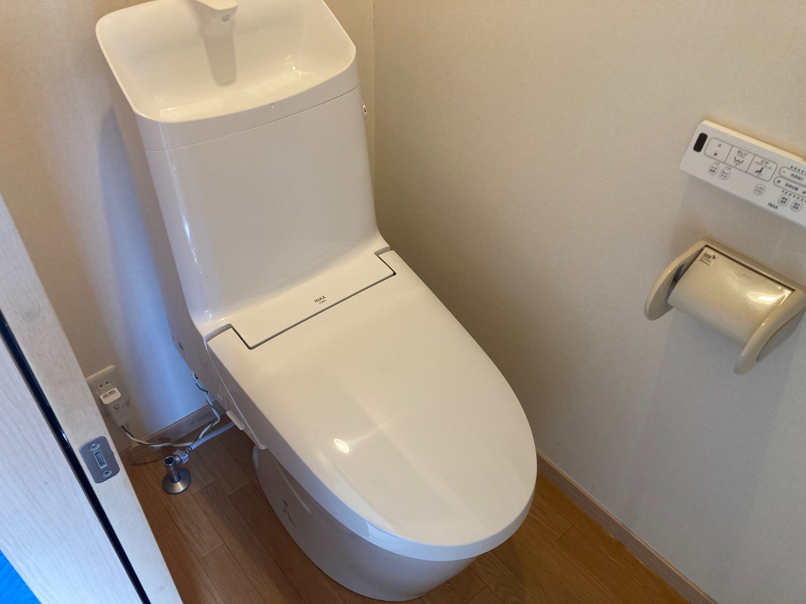
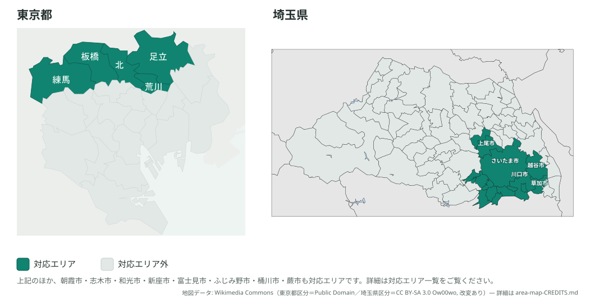
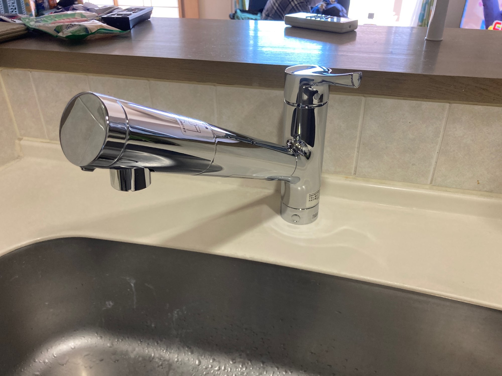
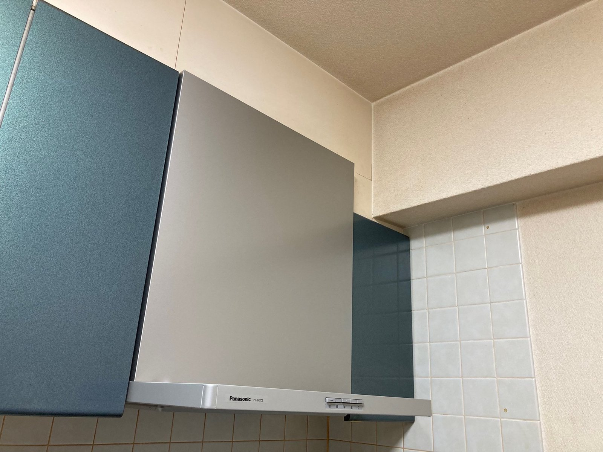
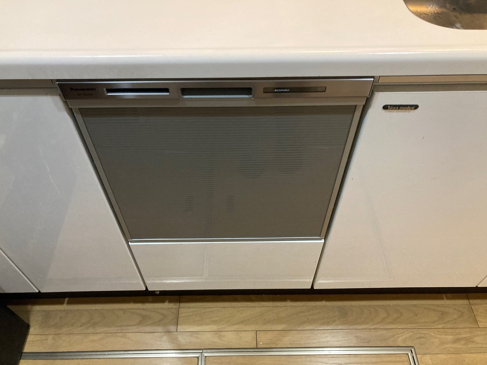

地域と商品を絞るから実現できる、
明朗価格と正確な住宅設備交換
トイレ・食洗機・コンロ・レンジフード・蛇口など、住宅設備の交換工事を専門に行っています。 対応エリアと取り扱い商品をあらかじめ限定することで、無駄なコストを抑えた明朗な価格と、 丁寧で正確な施工の両立を目指しています。

対応エリアと商品を絞った、地域密着の専門店です
「住まいの設備屋さん」は、東京都・埼玉県の一部地域に対応エリアを限定して活動する、 住宅設備交換の専門事業者です。トイレ・温水洗浄便座・蛇口・ビルトイン食洗機・ ビルトインコンロ・レンジフード・IHクッキングヒーター・浴室乾燥機・換気扇など、 住宅設備の交換工事を専門としています。
対応エリアと商品を絞るから、低価格が実現できる
移動範囲を対応エリア内に限定し、取り扱う商品もあらかじめ厳選することで、 見積もりや手配にかかる余分なコストを減らしています。その分を価格に反映し、 必要な工事に対して無駄のない明朗な料金でご案内しています。
安さだけでなく、正確な取り付けを重視
価格を抑えることだけを目的にはしていません。住宅設備は取り付けの正確さが その後の使い勝手や耐久性に直結するため、一件一件、丁寧かつ確実な施工を 何より大切にしています。
住宅設備、幅広く交換対応しています
下記9つのカテゴリの交換工事に対応しています。詳しい料金の目安はサービス・料金ページでご確認いただけます。
トイレ交換
既存トイレから最新の便器への交換に対応。あわせて換気扇の交換もご相談いただけます。
温水洗浄便座交換
便器はそのままに、温水洗浄便座（ウォシュレット）のみの交換にも対応しています。
蛇口・水栓交換
キッチン・浴室・洗面の蛇口交換に対応。水漏れや古くなった水栓の交換にも。
ビルトイン食洗機交換
キッチンに組み込まれたビルトイン食洗機の交換工事に対応しています。
ビルトインコンロ交換
ガスコンロ（ビルトインコンロ）の交換工事に対応。安全機能付きの最新機種へ。
レンジフード交換
キッチンの換気設備、レンジフードの交換工事に対応しています。
IHクッキングヒーター交換
ガスコンロからIHへの切り替え、IH本体の交換工事に対応しています。
浴室乾燥機交換
浴室の換気・乾燥設備、浴室乾燥機の交換工事に対応しています。
換気扇交換
トイレ本体交換時のオプションとして、換気扇の交換も承っています。
住まいの設備屋さんが選ばれる理由
価格が明朗
対応エリアと取り扱い商品を限定しているからこそ、料金体系をシンプルに保てます。見積もり時にきちんと内容をご説明し、後から想定外の費用が発生しないよう努めています。
地域密着で対応が早い
対応エリアを限定しているからこそ、移動時間を抑え、スムーズな日程調整・現地対応が可能です。地域の事情を理解した上でご案内できるのも強みです。
丁寧で正確な施工
安さだけを追い求めるのではなく、住宅設備ならではの取り付け精度にこだわっています。取り扱い商品を絞ることで、施工品質の安定にもつなげています。
個人事業主ならではの柔軟な対応
代表者自身が窓口となり対応するため、相談内容に応じた柔軟なご案内が可能です。ご不明点はメールで気軽にお問い合わせください。
東京・埼玉の一部エリアで対応しています
住まいの設備屋さんでは、迅速かつ丁寧な対応を維持するため、対応エリアを 東京都・埼玉県の一部地域に限定しています。対応エリア外の場合でも、 まずはお気軽にメールでご相談ください。
対応エリアの詳細を見る
施工実績（一部）
これまでの施工事例の一部をご紹介します。

キッチン水栓交換工事
古くなったキッチンの水栓を新しいワンホール水栓へ交換した事例です。

レンジフード交換工事
キッチンの換気設備、スリム型レンジフードへの交換事例です。

ビルトイン食洗機交換工事
キッチンに組み込まれたビルトイン食洗機の交換事例です。
お見積もり・ご相談はお気軽にどうぞ
現地調査・お見積り相談の日程調整はご予約ページから、それ以外のご質問や施工後の不具合相談などは お問い合わせフォームからお気軽にご連絡ください。内容を確認のうえ、担当より回答いたします。